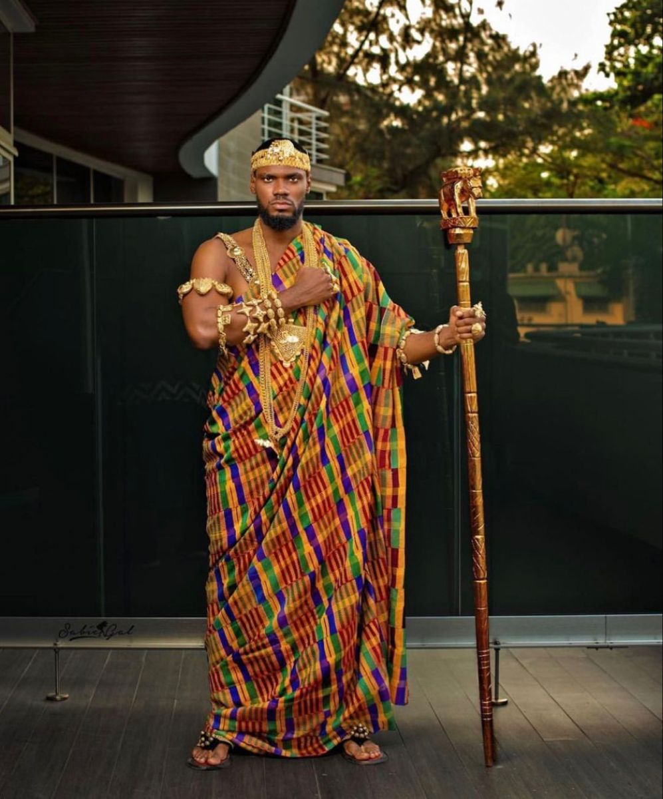
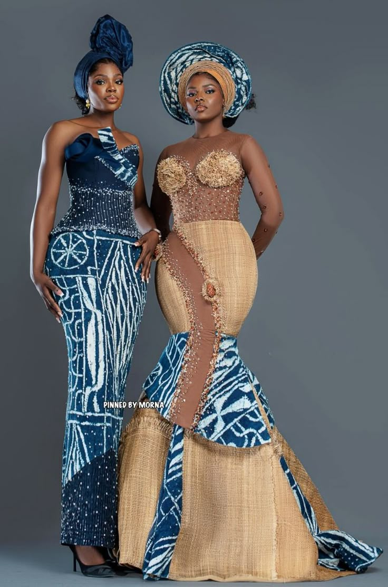
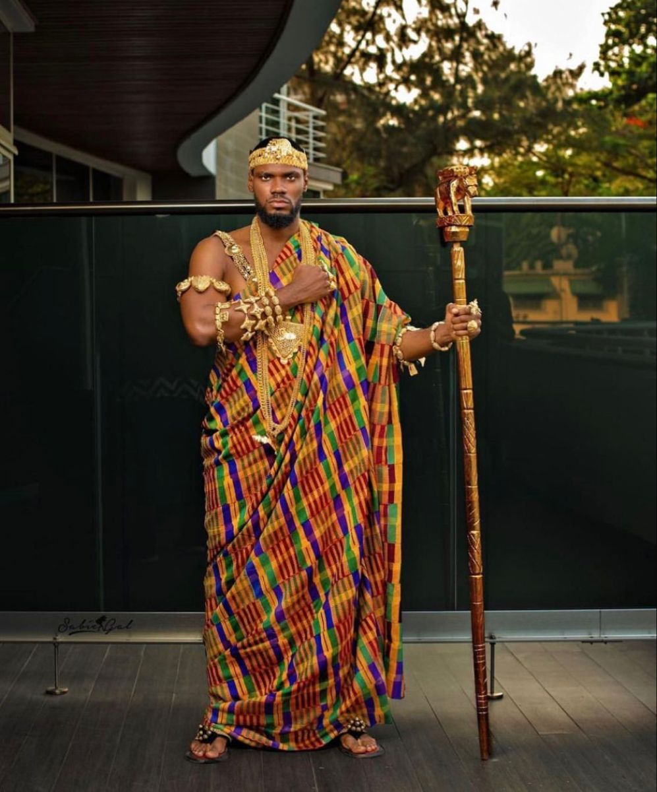
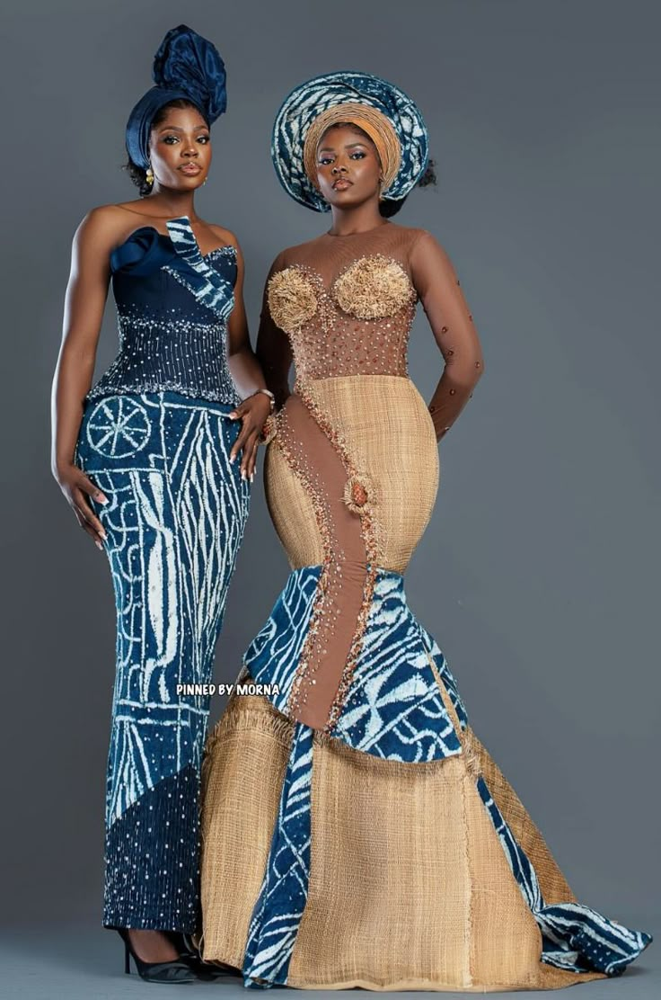

Fashion
 



African fashion is a living canvas, bold, expressive, and deeply rooted in identity. From the vibrant prints of kitenge and Ankara, to the regal kente of West Africa, the flowing robes of the Sahel, and the finely beaded garments of Southern tribes, every thread carries meaning. Whether worn in ceremony, celebration, or everyday life, our fashion reflects pride, creativity, and the ever-evolving spirit of the continent. It is tradition and trend, stitched together with purpose